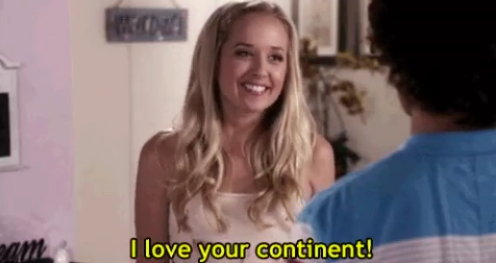

Dear Colleagues,
 As we close one of the most momentous weeks in our nation’s recent history,
As we close one of the most momentous weeks in our nation’s recent history,
 let’s pause for a moment on those famous instructions that Adolph S. Ochs left for us:
to cover the news without fear
or favor.
let’s pause for a moment on those famous instructions that Adolph S. Ochs left for us:
to cover the news without fear
or favor.
As Donald Trump begins preparing for his new administration, those words have rarely felt more important.
The Times is certainly not afraid-- our investigative report
has demonstrated our courage many times over.
That fearless, hard-fought journalism
will always stand as the backbone of The Times,
no matter the President.
our investigative report
has demonstrated our courage many times over.
That fearless, hard-fought journalism
will always stand as the backbone of The Times,
no matter the President.
But we also approach the incoming Trump administration without bias. We will cover his policies and his agenda fairly. We will bring expert analysis and thoughtful commentary to the changes we see in government, and to their ramifications on the ground.
We will look within and beyond Washington to explore the roots of the anger that has roiled red and blue America. If many Americans no longer seem to understand each other, let’s make it our job to interpret and explain.
Our predecessors founded our singular newspaper for just this moment -- to serve as a watchdog to the powerful; and to hold mighty institutions accountable, without fear or favor. We are more than ready to fulfill that promise.
 Together,
we have built the world’s best digital newsroom and it, too, was made for just this moment.
We will chronicle the new administration with
a lightning-fast report that features stories told in every medium and on every platform.
Together,
we have built the world’s best digital newsroom and it, too, was made for just this moment.
We will chronicle the new administration with
a lightning-fast report that features stories told in every medium and on every platform.
Here is what we have all dedicated our careers to: Going after the biggest stories in the world, and telling them as ambitiously as possible.
 Arthur
Arthur